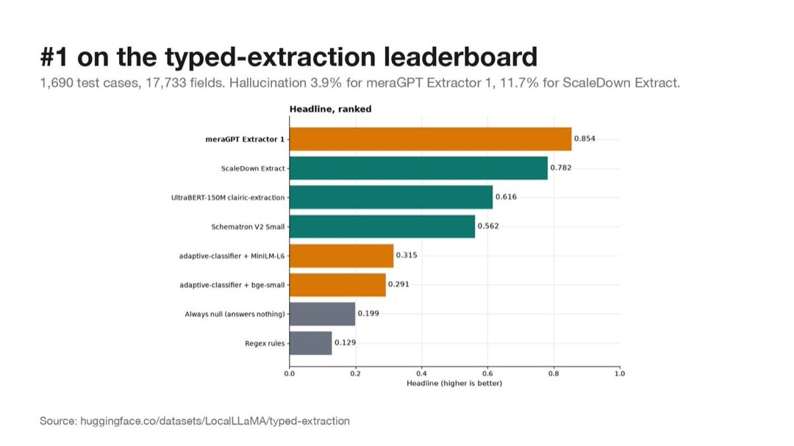
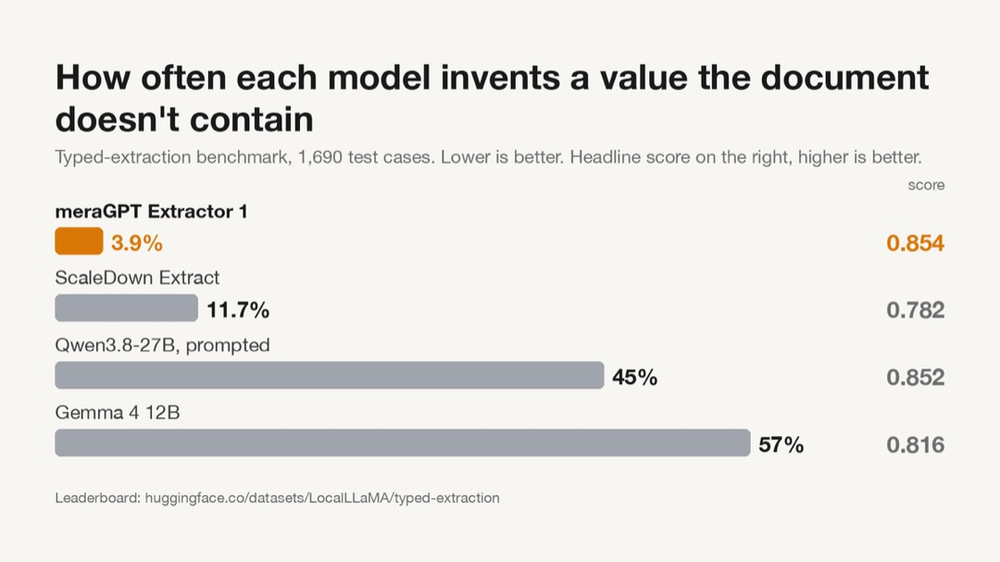
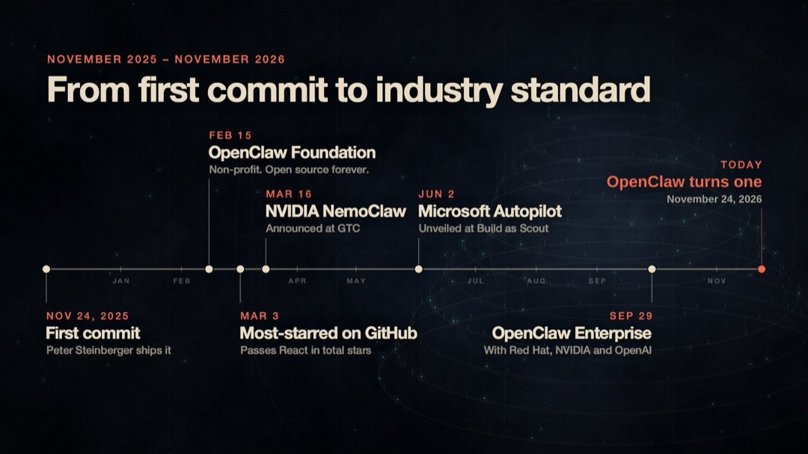
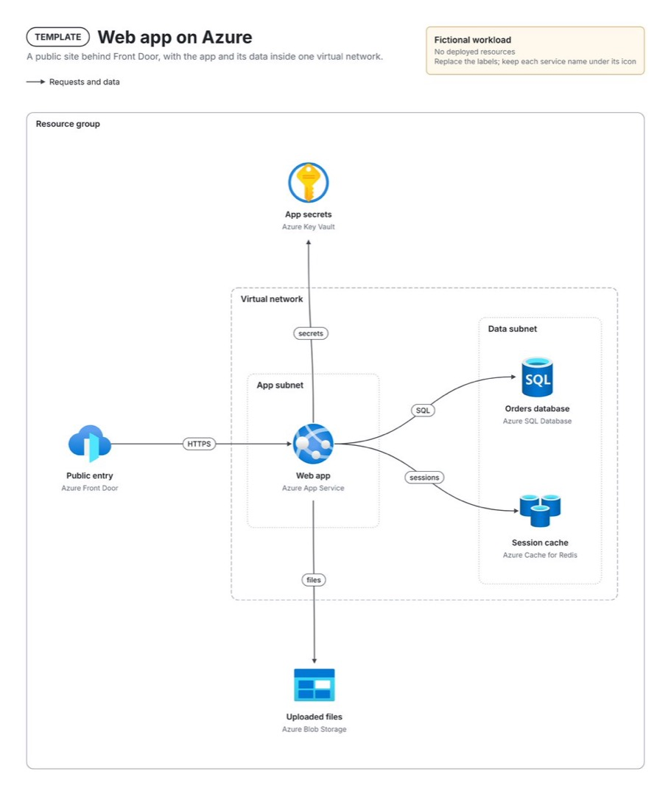
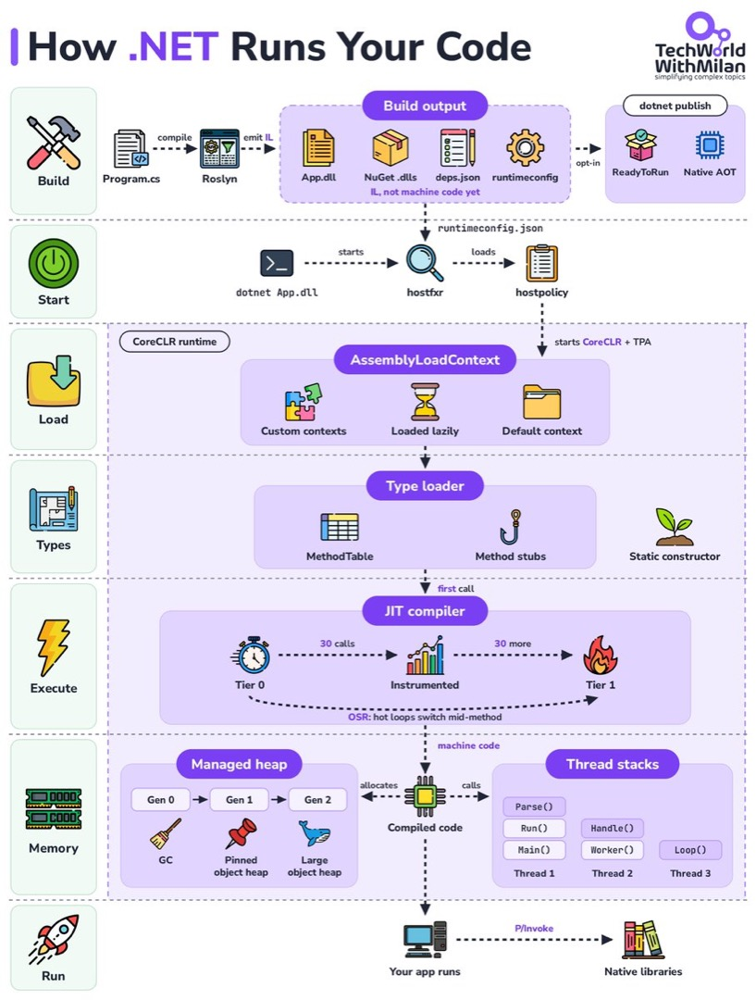
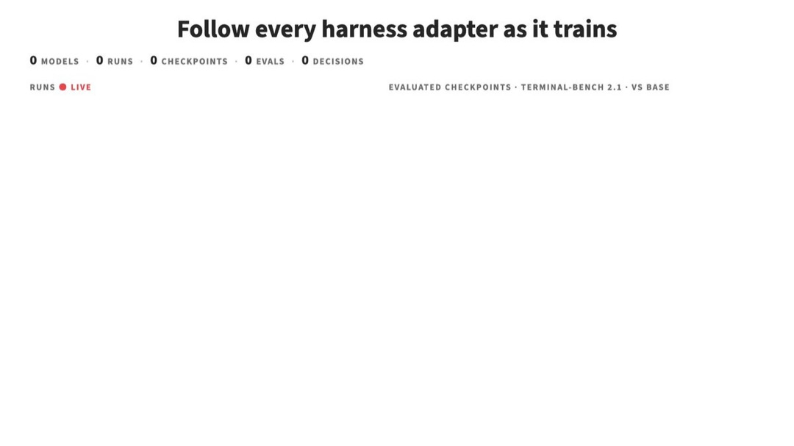
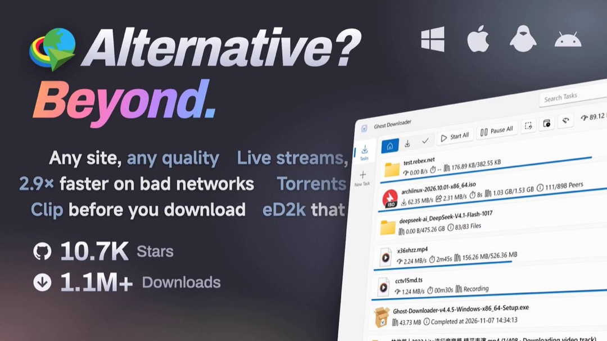

本期速览
01 AI编码提效21%审查耗时涨91%
02 DuckDB87万行聚合查询10毫秒
03 Extractor 1结构化文档抽取模型
06 CoreWeave CDS飙升224基点
08 .NET每次启动重新JIT编译方法
01｜AI编码提效21%审查耗时涨91%
来源（X） · @BainandCompany · 2026-11-10 05:40
中文译文
AI让编码变得更快。开发人员完成的任务多了约21%，但审查时间增加了约91%。瓶颈正在转向审查、治理和软件交付。了解那些领先一步的组织是如何围绕AI重新设计系统，以持续改进SDLC的。
原文
AI made coding faster. Developers complete ~21% more tasks, but review time is up ~91%. The bottleneck is shifting to review, governance, and software delivery. Discover how the organizations pulling ahead are redesigning their systems around AI to continuously improve the SDLC.
02｜DuckDB87万行聚合查询10毫秒
来源（X） · @Suercha007 · 2026-11-25 17:09
数据有 87 万行，场景都是聚合、分组和关联查询，基本上都是 10 毫秒以内出结果！！
顺便测了下 pandas 需要 10 秒左右，差距太大了！可以被称为数据分析领域的 sqlite!
03｜Extractor 1结构化文档抽取模型
来源（X） · @latent_node · 2026-11-24 01:33
中文译文
meraGPT Extractor 1 发布了。发送一个JSON Schema和一个文档、电子邮件、收据、合同或扫描件；就能得到带类型的JSON返回，输入中不包含的字段为null。
在带类型提取方面排名第一：0.854，幻觉率3.9%。接下来：ScaleDown Extract，0.782，幻觉率11.7%。
https://meragpt.com/blog/introducing-extractor-1
原文
meraGPT Extractor 1 is out. Send a JSON Schema and a document, email, receipt, contract or scan; get typed JSON back, null for fields the input doesn't contain.
#1 on typed-extraction: 0.854 at 3.9% hallucination. Next: ScaleDown Extract, 0.782 at 11.7%.
https://meragpt.com/blog/introducing-extractor-1


04｜Antigravity会话间不共享记忆
来源（X） · @antiAIvo · 2026-11-25 21:38
才发现一个工作区里面不同的会话是没有记忆的
大无语.....😑
通常用Claude或GPT，在同一个Project里
开启一个A会话，再开启一个B会话
B 会话里是知道A会话干了什么活
举一个《火影》的例子来描述下：
其他家Agent的Project更像佩恩六道：
多个会话，背后是同一套记忆和意志，新开会话也知道之前干过什么
Antigravity的Project更像晓组织：
大家挂着同一个名头，共享同一个据点（文件系统）
但每个会话都是独立的脑子
不会自动知道队友刚才聊了什么、决定了什么
想接着干，得自己去翻文件，或者直接把原会话叫回来
05｜OpenClaw一年代码提交12万次
来源（X） · @hungryturbo · 2026-11-25 21:37
一块来看下官方发的复盘：
1、“未来人人用黑框命令调用 AI 的极客幻想彻底破灭，自然语言对话成了接管电脑的默认形态。一年之内项目狂揽了 12 万次代码提交，不仅让微软、英伟达、OpenAI、红帽罕见联手基于它共建企业标准，甚至倒逼银行，航司和电商纷纷出台反 AI Agent 政策（防自动比价锁票、高频操作），传统巨头开始立规矩防御，恰恰说明 Agent 真干出活了。
2、过去学剪辑，画 3D 图纸，写代码得熬几年啃专业软件，现在“模型+自定义工作流”直接抹平了工具鸿沟，电脑第一次真正成为普通人的纯粹表达媒介。小到不懂代码的家长，直接用龙虾给孩子手搓专属直播电视频道，大到 600 人规模的企业，实现人手配发一只龙虾，个体调动算力的边界被彻底撑开。
3、复盘一下你现在的日常，让 AI 写好方案，微信发给同事，同事复制进他的 AI 里继续改。在这条链路里，人类沦为了帮两个 AI 传文件的肉身代理。更反共识的是，OpenClaw 直接否定了，行业热炒的多 Agent 自动对接开会，断定真正的多人 AI 协作，是多人进入同一个会话、共享上下文，围着同一个 Agent 干活。
4、多人共享单 Agent 一旦普及，传统的“闭门造车—提审—打回重做”死循环直接消失。遇到卡点直接艾特责人进同一个 Agent 房间，现场补充背景、一起调提示词、当场拍板上线，连算力 Token 都由主房间统一买单。放到商业场景更颠覆，软件出问题何必提工单排队？进共享会话直接跟产品把 Bug 修了，买服务何必听销售画饼？直接让产品按你的真实业务当场搭一套专属 Demo。
5、把整台电脑的底层控制权彻底交给 AI，相当于给实习生配齐了所有保险柜钥匙，这也是 OpenClaw 成为史上最大开源项目后，出现的最核心的争议。虽然它刚在 OpenAI 计划支持下，高分通过了顶级安全机构 Trail of Bits 的代码审计，但只要 AI 还能读写你的本地系统，效率与安全的攻防，就是一场没有终点的持久战。

06｜CoreWeave CDS飙升224基点
来源（X） · @MrPingChecks · 2026-11-25 21:35
引用内容
Mr. Ping @MrPingChecks
这家一直看多 AI 硬件的研究机构，今天第一次公开对信用风险提出担忧。
由于甲骨文的 5 年期 CDS（相当于给它的债买违约保险的价格）一夜涨了 26 个基点，创历史新高；CoreWeave 过了 1000。
他们的推演是：借钱变贵 → 靠借钱买卡的新云厂商买得少 → AI 硬件订单的增速可能要下调。
07｜open-diagram检查架构图排版
来源（X） · @QingQ77 · 2026-11-25 21:31
https://github.com/lukendeasy/open-diagram

08｜.NET每次启动重新JIT编译方法
来源（X） · @milan_milanovic · 2026-11-25 15:27
中文译文
你知道你的.NET应用每次启动时都会重新编译自己吗？
如果你写C#，这就是你运行dotnet App.dll并且应用显示第一行时发生的事情。
dotnet build只到IL（中间语言）为止，这是一种CPU不知道如何执行的字节码。运行时在应用运行期间一次一个方法地将其转换为机器代码，并且只保存在内存中。所以这个工作在每次启动时都会重复。
以下是完整的路径：
𝟭. 𝗕𝘂𝗶𝗹𝗱（构建）
C#编译器名为Roslyn，将Program.cs编译为IL，并将其与元数据合并到App.dll中。在它旁边你会得到你的NuGet .dlls、deps.json和runtimeconfig.json。
𝟮. 𝗦𝘁𝗮𝗿𝘁（启动）
dotnet App.dll调用hostfxr，它从runtimeconfig.json中选择.NET版本。然后hostpolicy读取deps.json并构建TPA列表。
TPA指的是trusted platform assemblies（可信平台程序集），即你的依赖加上框架。然后它启动CoreCLR，真正的.NET运行时。
𝟯. 𝗟𝗼𝗮𝗱（加载）
所有程序集都被加载到一个AssemblyLoadContext中。Default上下文持有TPA程序集，你自己的上下文可以隔离插件并卸载它们。
App.dll和核心库会立即加载。其余的按需加载，当JIT编译一个需要它们的方法时才加载。
𝟰. 𝗧𝘆𝗽𝗲𝘀（类型）
类型加载器为每个类型构建一个MethodTable，包含其大小和用于虚调用的v-table槽位。方法最初是prestubs，即在首次调用时调用JIT的占位符。静态构造函数在类型首次被使用时运行，而不是在加载时运行。
𝟱. 𝗘𝘅𝗲𝗰𝘂𝘁𝗲（执行）
第一遍JIT是Tier 0，速度快，几乎没有优化。经过30次调用后，运行时会重新JIT该方法并插入插桩，以记录哪些代码路径和类型出现最多。这被称为Dynamic PGO，自.NET 8起成为默认行为。
再经过30次调用，一个后台线程会将其再次JIT为Tier 1，完全优化的版本。一个热循环不需要等待方法返回。OSR（on-stack replacement，栈上替换）会在方法执行中途切换到优化后的代码。
𝟲. 𝗠𝗲𝗺𝗼𝗿𝘆（内存）
JIT生成的代码存放在代码堆中。对象最初在托管堆的Gen 0中，存在时间越长越会被提升到Gen 1和Gen 2。
85,000字节或以上的对象会进入Large Object Heap（LOH，大对象堆），以固定方式分配的数组进入Pinned Object Heap。
GC（垃圾回收器）回收死对象并压缩存活的对象，LOH除外，LOH上通常只进行标记清除。每次调用都会在其线程的栈上添加一个帧。
𝟳. 𝗥𝘂𝗻（运行）
现在一切都以老式的机器代码方式运行。在桌面和服务器CoreCLR上没有解释器。原生库（.dll、.so、.dylib）通过P/Invoke引入。
有两个发布选项会改变这一点，都是可选启用的。ReadyToRun附带预编译的方法，所以Tier 0代码已经存在，但JIT仍会将热方法重新JIT为Tier 1。Native AOT发布一个完全不使用JIT的原生可执行文件。
原文
Did you know that your .NET app recompiles itself every time it starts?
If you write C#, this is what happens when you run dotnet App.dll and your app shows the first line.
dotnet build stops at IL (Intermediate Language), a bytecode no CPU knows how to execute. The runtime turns it into machine code one method at a time while the app runs, and keeps it only in memory. So the work repeats on every start.
This is the full path:
𝟭. 𝗕𝘂𝗶𝗹𝗱
The C# compiler, called Roslyn, compiles Program.cs to IL and merges it, along with metadata, into App.dll. Next to it you get your NuGet .dlls, deps.json and runtimeconfig.json.
𝟮. 𝗦𝘁𝗮𝗿𝘁
dotnet App.dll invokes hostfxr, which picks the .NET version from runtimeconfig.json. hostpolicy then reads deps.json and builds the TPA list.
TPA means trusted platform assemblies, your dependencies plus the framework. Then it starts CoreCLR, the real .NET runtime.
𝟯. 𝗟𝗼𝗮𝗱
All assemblies get loaded into an AssemblyLoadContext. The Default context holds the TPA assemblies, and your own contexts can isolate plugins and unload them.
App.dll and the core library load right away. The rest loads lazily, when the JIT compiles a method that needs it.
𝟰. 𝗧𝘆𝗽𝗲𝘀
The type loader builds a MethodTable for each type, with its size and the v-table slots for virtual calls. Methods start as prestubs, placeholders that invoke the JIT on the first call. Static constructors run the first time a type gets used, not when it loads.
𝟱. 𝗘𝘅𝗲𝗰𝘂𝘁𝗲
The first JIT pass is Tier 0, fast with little to no optimization. After 30 calls, the runtime re-JITs the method with instrumentation to record which code paths and types show up most. This is called Dynamic PGO, and is default since .NET 8.
After 30 more calls, a background thread JITs it again as Tier 1, fully optimized. A hot loop doesn't wait for the method to return. OSR (on-stack replacement) switches it to optimized code mid-method.
𝟲. 𝗠𝗲𝗺𝗼𝗿𝘆
JITed code lives in the code heap. Objects start in Gen 0 on the managed heap and get promoted to Gen 1 and Gen 2 the longer they exist.
Objects of 85,000 bytes or more go to the Large Object Heap (LOH), arrays allocated as pinned to the Pinned Object Heap.
The GC (garbage collector) reclaims dead objects and compacts the survivors, except on the LOH, where it normally only sweeps. Every call adds a frame to its thread's stack.
𝟳. 𝗥𝘂𝗻
Everything now runs as good old-fashioned machine code. There's no interpreter on desktop and server CoreCLR. Native libraries (.dll, .so, .dylib) come in through P/Invoke.
Two publish options change this, both opt-in. ReadyToRun ships precompiled methods, so Tier 0 code is already there, but the JIT still re-JITs hot methods to Tier 1. Native AOT publishes one native executable with no JIT at all.

09｜Claude Code用代码绘制动画风格
来源（X） · @GitHub_Daily · 2026-11-25 21:30
animation-styles 是一个 Claude Code 的 Skill，收录了 39 种动画风格，每一帧都是用代码画出来的，没用任何生图或视频模型。
作者拿同一个 5 秒的小故事画了 39 遍，水壶往陶杯里倒茶、热气往上飘，白板、粉笔、水彩、浮世绘、彩色玻璃、像素风都有。
GitHub：https://github.com/deenukhan/animation-styles
用法就两句话，先让 Claude Code 装好这个 Skill，再说一句「用浮世绘风格做一段雨水落进小池塘的 5 秒视频」，就能拿到 MP4。
不满意就再补一句换成像素风，同一个故事重画一遍。代码都摊开在那，想改哪一笔直接改，我觉得这点比生成式视频踏实。
每段默认是 4:5 的竖版，正好是 Instagram 竖图的尺寸，做课程片头、讲解动画都能拿来用。
10｜harness适配器训练权重数据开源
来源（X） · @yb2698 · 2026-11-25 20:33
中文译文
宣布即将推出的harness适配器的实况训练！
- @thinkymachines Inkling-2-Mini 在 Pi / Hermes / DeepSeek-Harness 上
- @Alibaba_Qwen Qwen3.8-Flash-Next 在 Pi 上
所有权重、数据、实验、决策、中间检查点（含GGUF）现已全部开放 🔥 你还可以使用你的@huggingface账户对结果发表评论和反馈建议！
请加入这次开放训练，共同构建下一代harness适配器 ⬇️
https://harness-hub-community-adapters.hf.space/
原文
Announcing the live training of the upcoming harness adapters!
- @thinkymachines Inkling-2-Mini on Pi / Hermes / DeepSeek-Harness
- @Alibaba_Qwen Qwen3.8-Flash-Next on Pi
All weights, data, experiments, decisions, intermediate checkpoints (GGUF included) are open now 🔥 You can also comment on results and suggest feedback using your @huggingface account!
Please join this open training and build together the next generation of harness adapters ⬇️
https://harness-hub-community-adapters.hf.space/

11｜Ghost Downloader全能下载
来源（X） · @knowledgefxg · 2026-11-25 21:15
开源的全能下载器，基本等同于把IDM、qBittorrent、yt-dlp等东西捏到了一个软件里，支持windows，macos，Linux，安卓端，支持HTTP、磁力/BT、FTP、M3U8等协议，如果你平时要在好几个下载工具之间来回切换，可以试试这个，免折腾了。
https://github.com/XiaoYouChR/Ghost-Downloader-3
